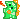
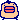

site is still a work in progress! thank you for your patience!
greetings, internet voyager!
komorebi is a personal website that serves as a hub for my creative endeavors, including blogs, short stories, and projects. here, you can explore my work, learn more about me, and even leave a message in the guestbook!!

feel free to navigate through the different sections of my website using the navigation bar above. each section offers a unique glimpse into my world, from my personal thoughts and experiences in the blogs to the imaginative realms of my short stories and the innovative projects i've undertaken!

thank you for visiting komorebi, and i hope you enjoy your time here!!
what is komorebi..?
you know when you go on walks, whether you're going home from school or you're out with friends, and you notice little shadows and glimpses of light on the ground? and then you look up, and see the sun through the leaves of trees overhead, moving with the wind?
that light is komorebi.
komorebi is a japanese word, 木漏れ日, that literally means "sunlight leaking through trees". there is no word for it in english (how preposterous..!)
so... why komorebi?
well, simply put, it's one of my most favorite things in the world! it's just so pretty and serene--it brings me peace
and i hope to bring the same peacefulness into this digital paradise of mine!